Circadia
About us
We are an interdisciplinary group spanning the School of Computer Science and the School of Psychology at Northumbria University. Our research focusses on the intersection of physics, computer science, physiology and chronobiology. We are particularly interested in sleep, rhythmicity, and medical signals of various modalities.
The word “Circadia” derives from the Latin “circa diem” meaning “around the day”, a reference to the circadian rhythms that govern our lives and the focus of our research. It also rhymes with “arcadia” - a place for exploration, discovery and learning.
Interested in working with us? Visit our Join us page.
Our tools & software
News
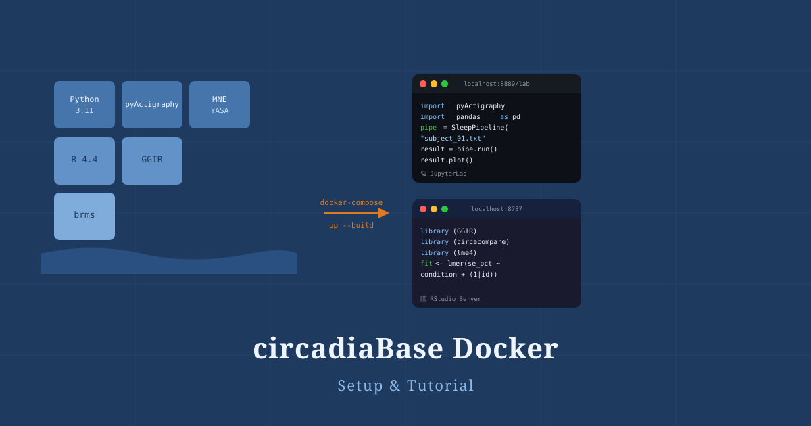
A step-by-step guide to spinning up the Circadia Lab's reproducible research environment — JupyterLab and RStudio Server in a single Docker Compose stack — for chronobiology and actigraphy research.
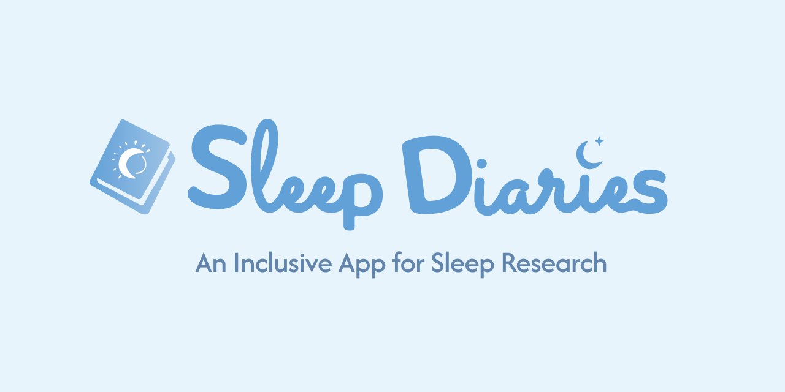
We are releasing Sleep Diaries — a free, open-source, research-grade sleep diary app built with React Native and Expo. It runs on iOS, Android, and the web, and is designed to be easily adapted for clinical sleep research and personal use.
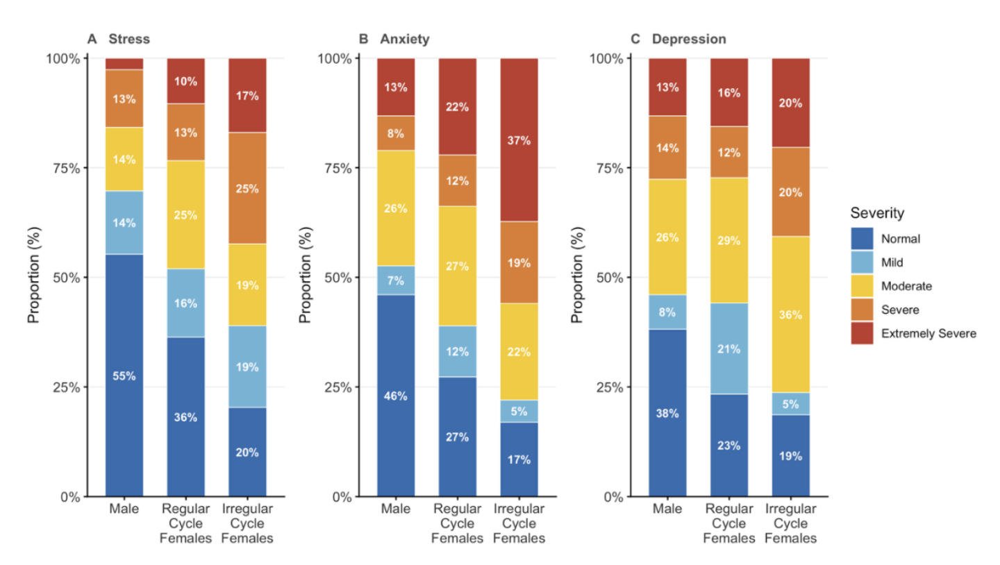
bioRxiv preprint · 2026
In a three-group study of 212 Brazilian adolescents (males, and females with regular or irregular menstrual cycles), stress and anxiety followed a graded, monotonic pattern tracking menstrual cycle regularity, with irregular-cycle females showing the highest symptom burden. The gradient held after adjusting for sleep and circadian variables, and socioeconomic status was protective for males but not females, positioning menstrual irregularity as a biological determinant of adolescent mental health risk independent of sleep.
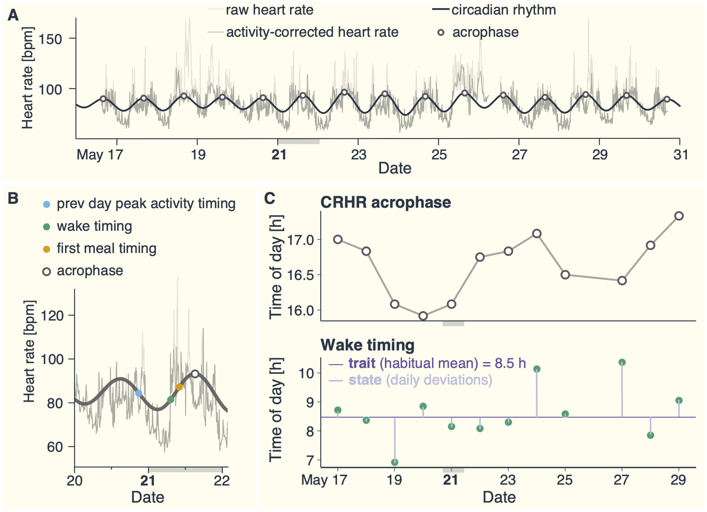
arXiv preprint · 2026
Using up to four weeks of free-living wearable data (smartwatch and continuous glucose monitor) from 105 healthy adults across nearly 2000 person-days, this study asks whether the timing of the circadian heart-rate rhythm is better explained by people's habitual lifestyle patterns or by their day-to-day deviations from those patterns. Habitual traits, such as typical wake time, accounted for the large majority of between-person variation in circadian phase, while daily fluctuations in sleep, food, and activity timing explained comparatively little within-person variation, pointing to sustained changes in lifestyle timing, rather than one-off adjustments, as the more promising chronotherapy target.
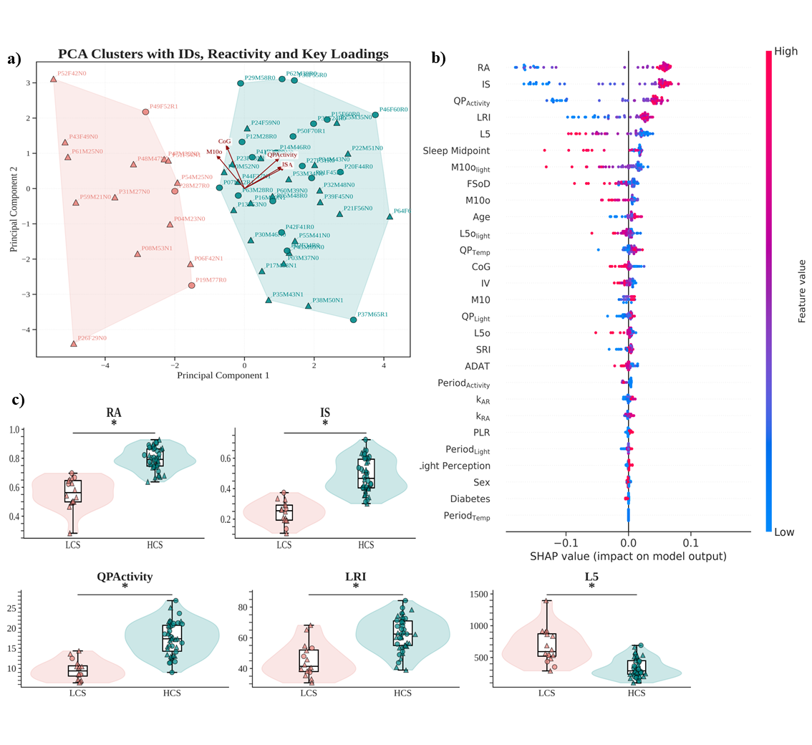
Chronobiology International · 2026
Using wrist actigraphy and machine learning in 58 blind adults living near the equator in Brazil, this study shows that circadian rest–activity rhythms can remain stably entrained even without photic input. Two distinct circadian phenotypes were identified: 72% of participants showed Higher Circadian Stability, a proportion far exceeding previous reports in blind cohorts, suggesting that environmental regularity at low latitudes supports non-photic circadian entrainment.
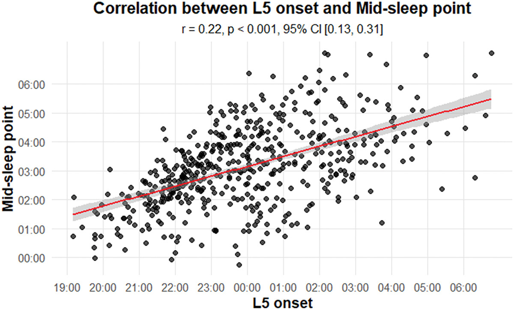
Chronobiology International · 2026
This study examined whether L5 onset — the start of the least active 5-hour period derived from rest–activity rhythms — can serve as a proxy for circadian phase in six-month-old infants, where standard sleep-scoring algorithms validated for adults have limited applicability. Analysing 502 nights from 81 infants, a significant positive correlation was found between mid-sleep point and L5 onset, supporting L5 onset as a practical, non-invasive circadian phase marker in early childhood.
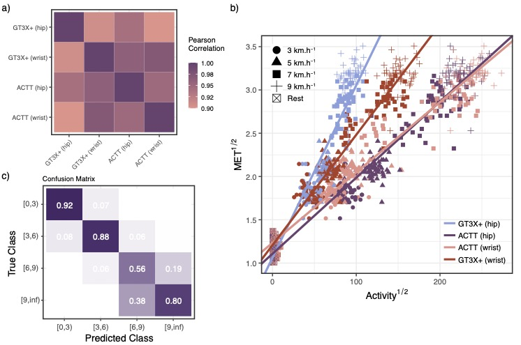
PLOS ONE · 2026
Validation of the ActTrust® actigraphy device against the ActiGraph® GT3X+ and indirect calorimetry in 56 young adults. Derives the first published cut-points for physical activity intensity classification using ActTrust® at hip and wrist placements.
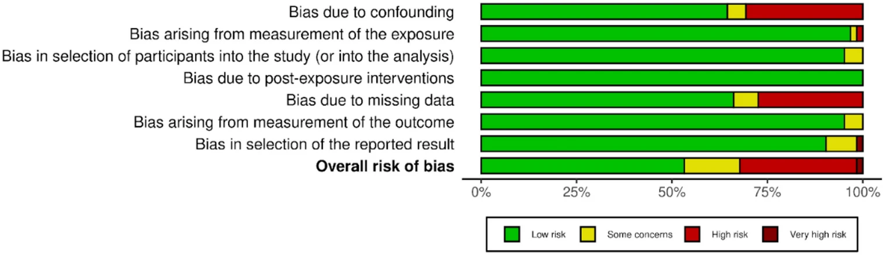
Sleep and Vigilance · 2025
The first systematic review of chronotype profiling in children aged 0–10 years, conducted following PRISMA guidelines across five databases. The review finds inconsistent evidence on whether morning chronotype predominates in children, highlights the heterogeneity of measurement approaches used across studies, and identifies key gaps in the literature on circadian preference in early childhood.
Journal of Sleep Research · 2024
This study assessed the heritability of polysomnography sleep measures in 648 participants from the Baependi Heart Study in Brazil. It found that genetic factors influence total sleep time, non-REM sleep stages (especially N3), and the apnea-hypopnea index, but not REM sleep. These findings support the feasibility of future genetic studies on sleep traits.
Sleep Science · 2024
A consensus document from the Brazilian Sleep Association establishing standardised reporting guidelines for polysomnography, covering scoring rules, technical specifications, and reporting conventions to improve consistency and comparability of sleep studies across Brazilian clinical and research settings.
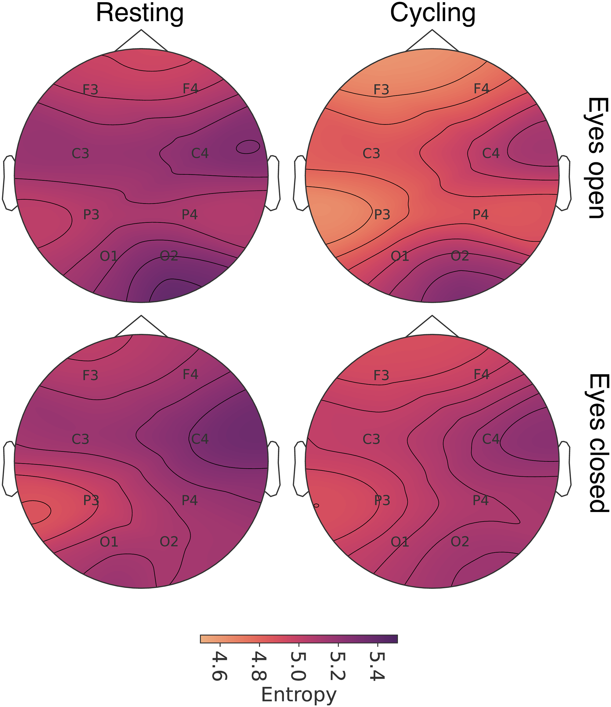
Plos One · 2024
This study used recurrence entropy to assess brain complexity (BC) in EEG signals during rest and cycling in 24 healthy adults. Results showed lower entropy during cycling, suggesting that repetitive movement reduces brain complexity due to continuous sensory feedback and streamlined sensorimotor processing.
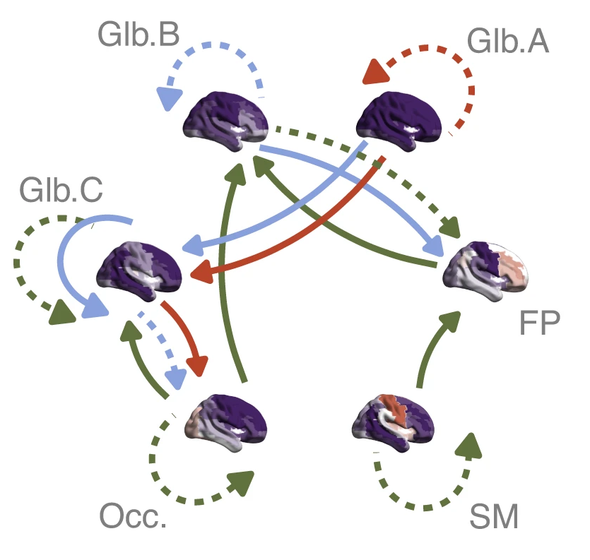
Nature Communications · 2024
This study examines dynamic functional connectivity in newborns using fMRI, revealing six transient brain connectivity states present at birth. It finds that preterm infants exhibit atypical connectivity patterns, which are linked to social, sensory, and repetitive behaviors at 18 months, suggesting early neurodevelopmental differences.
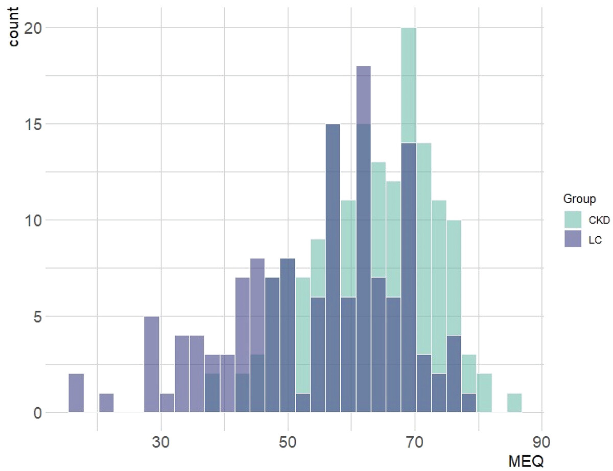
The Journal of Biological and Medical Rhythm Research · 2024
This study examined circadian rhythm disruptions in 165 hemodialysis patients, finding that 40.6% experienced hemodialysis-induced chronodisruption (HIC). A morning chronotype was more prevalent in CKD patients than in the general population. HIC and chronotype were linked to quality of life but not sleep quality, highlighting potential implications for patient well-being.
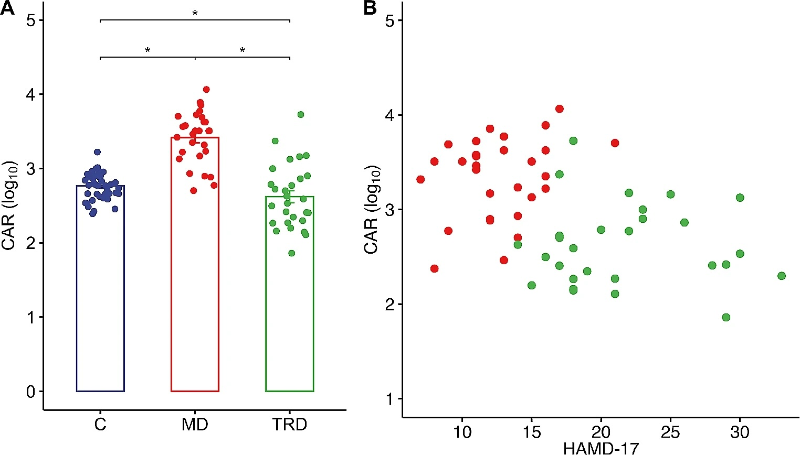
Current Psychology · 2024
This study examined the relationship between sleep quality and cortisol awakening response (CAR) across major depression severity. Patients with treatment-resistant depression had poorer sleep and a blunted CAR, while those with mild depression showed worse sleep but an elevated CAR compared to healthy controls. Sleep quality, particularly sleep medication use and sleep efficiency, was a strong predictor of depression severity, highlighting its clinical relevance for assessing and managing major depressive disorder.
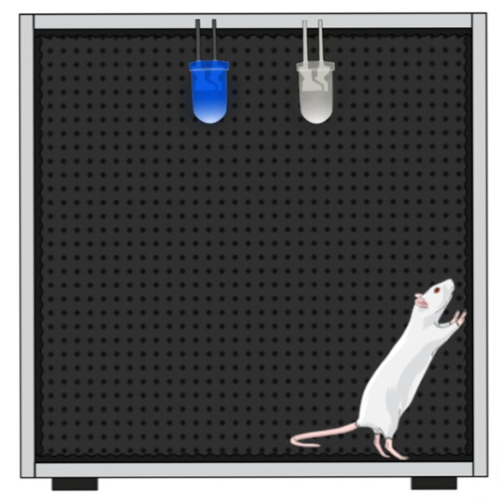
Plos One · 2023
This study investigated the effects of blue light therapy on circadian rhythms in aging rats. Exposure to blue light for 14 days improved locomotor rhythmicity, increasing amplitude, robustness, and phase advance while enhancing rest-phase consolidation. However, these benefits required continuous exposure. The findings suggest that blue light may help mitigate age-related circadian dysfunctions, though further research is needed to understand the underlying neural mechanisms.